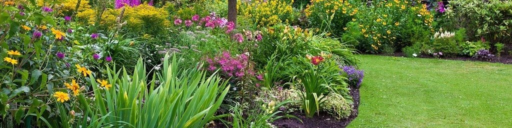

        <!-- About Section -->
        <section id="about" class="py-16 bg-gray-50">
            <div class="container mx-auto px-4 grid md:grid-cols-2 gap-16 items-center items-center">
                <div class="steve-image-wrapper">
                    <div class="container mx-auto px-4 items-center">
                        <!--  -->
                        
                    </div>
                    <p class="mt-4 text-forest font-bold">California Certified Nurseryman & Professional Horticulturist</p>
                    <p class="text-gray-600">Lic #C27-743494</p>
                    <p class="mt-6 text-lg font-semibold text-center text-lime italic">
                        "Excellence and Integrity installed one job at a time."
                    </p>
                        

                </div>

                <div>
                    <h2 class="text-4xl font-bold mb-6">About <span class="text-forest">Lytle Landscape & Construction</span></h2>
                    <p class="text-lg text-gray-700 mb-6">
                        Lytle Landscape & Construction, founded by Steve Lytle, is one of Orange County's premier landscape design and construction companies. With over 40 years of experience, Steve has built a reputation for creating sustainable, artistic landscapes that stand the test of time. As a California Certified Nurseryman and Professional Horticulturist, Steve's knowledge and hands-on expertise ensure every project meets the highest standards of quality and craftsmanship.
                    </p>
                    <p class="text-lg text-gray-700 mb-8">
                        Licensed and insured (Lic #C27-743494), Lytle Landscape & Construction is dedicated to transforming outdoor spaces into functional, beautiful environments that reflect your unique lifestyle. Whether it's plant selection, hardscape design, or outdoor lighting, we approach every project with a commitment to excellence.
                    </p>

                    <div class="grid sm:grid-cols-2 gap-8 mb-8">
                        <div class="bg-white p-6 rounded-lg shadow-md">
                            <h3 class="text-xl font-bold text-forest mb-4">Our Mission</h3>
                            <p class="text-gray-600">
                                To design and build landscapes that enhance your property's value, connect you with nature, and provide lasting beauty and functionality for years to come.  We are committed to sustainable practices, water conservation, and creating outdoor spaces that inspire and delight.  Our goal is to exceed your expectations and create a garden sanctuary that reflects your unique style and vision.
                            </p>
                        </div>
                        <div class="bg-white p-6 rounded-lg shadow-md">
                            <h3 class="text-xl font-bold text-forest mb-4">Service Areas</h3>
                            <ul class="text-gray-600 list-disc ml-4">
                                <li>Aliso Viejo</li>
                                <li>Costa Mesa</li>
                                <li>Dana Point</li>
                                <li>Irvine</li>
                                <li>Laguna Beach</li>
                                <li>Laguna Hills</li>
                                <li>Laguna Niguel</li>
                                <li>Laguna Woods</li>
                                <li>Lake Forest</li>
                                <li>Mission Viejo</li>
                                <li>Newport Beach</li>
                                <li>Rancho Santa Margarita</li>
                                <li>San Clemente</li>
                                <li>San Juan Capistrano</li>
                                <li>Tustin</li>
                                <li>Yorba Linda</li>
                                <li>Orange County</li>
                            </ul>
                        </div>
                    </div>

                    <div class="flex flex-col sm:flex-row gap-4">
                        <a href="#contact" class="inline-flex items-center justify-center px-6 py-3 bg-forest text-white rounded-lg hover:bg-lime transition-colors">
                            <i class="fas fa-seedling mr-2"></i>
                            Schedule a Consultation
                        </a>
                        <a href="tel:9495257929" class="inline-flex items-center justify-center px-6 py-3 border-2 border-forest text-forest rounded-lg hover:bg-forest hover:text-white transition-colors">
                            <i class="fas fa-phone mr-2"></i>
                            (949) 525-7929
                        </a>
                    </div>
                </div>
            </div>
        </section>
